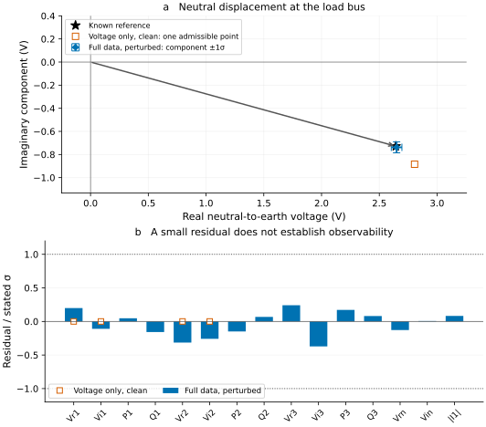

Constrained state estimation on a four-wire feeder
<!– study-executable –>
Can voltage and power readings identify a displaced neutral? What changes when some readings are missing? This study estimates the conductor voltages of a small unbalanced feeder, separates uncertain measurements from exact Kirchhoff equations, and checks what uncertainty can be reported.
The circuit and readings are synthetic. An independent voltage-drop calculation provides the known operating state; neither the estimator nor a power-flow solver generates that reference. The experiment includes clean readings, deterministically perturbed readings, an underobserved case, exact device laws, and two successive measurement sets.
Run this study
Install the pinned dependencies as described in Your first study. From the repository root, run:
julia --project=. scripts/run_study_tutorials.jlYou can also paste this page's Julia blocks into a fresh Julia session in order. CI executes these same blocks on Julia 1.10 and the latest stable release. The dense, sparse and shared Ipopt solvers are prototypes; this small example demonstrates their interpretation, not large-feeder performance or field validation.
Define the circuit and its known state
The source supplies balanced 230 V phase-to-earth phasors. Two identical four-conductor line sections connect it to a load bus through an unloaded junction. Only the source neutral is grounded. Each section has diagonal phase impedance $0.08+j0.04$ Ω and neutral impedance $0.20+j0.08$ Ω, with no mutual impedance or shunt admittance.
The circuit is src → l1 → mid → l2 → load; all four conductors continue through both sections.
For the reference calculation, choose phase load currents with unequal magnitudes. The neutral carries their negative sum. After $m$ line sections,
\[V_{k,m}=E_k-m z_{phase}I_k,\qquad V_{n,m}=m z_n\sum_k I_k.\]
These expressions satisfy each conductor's voltage drop and the unloaded junction's KCL. They provide conductor-to-earth potentials, not phase-to-neutral voltages; the latter are $U_k=V_{k,load}-V_{n,load}$.
using PowerOptLab
using BMOPFTools: parse_bmopf
using LinearAlgebra: norm
net = parse_bmopf("""
{
"bus": {
"src": {"terminal_names": ["1", "2", "3", "n"],
"perfectly_grounded_terminals": ["n"]},
"mid": {"terminal_names": ["1", "2", "3", "n"]},
"load": {"terminal_names": ["1", "2", "3", "n"]}},
"voltage_source": {
"supply": {"bus": "src", "terminal_map": ["1", "2", "3"],
"v_magnitude": [230.0, 230.0, 230.0],
"v_angle": [0.0, -2.0943951023931953, 2.0943951023931953]}},
"linecode": {
"cable": {"R_series_1_1": 0.08, "R_series_2_2": 0.08,
"R_series_3_3": 0.08, "R_series_4_4": 0.20,
"X_series_1_1": 0.04, "X_series_2_2": 0.04,
"X_series_3_3": 0.04, "X_series_4_4": 0.08}},
"line": {
"l1": {"bus_from": "src", "bus_to": "mid",
"terminal_map_from": ["1", "2", "3", "n"],
"terminal_map_to": ["1", "2", "3", "n"],
"linecode": "cable", "length": 1.0},
"l2": {"bus_from": "mid", "bus_to": "load",
"terminal_map_from": ["1", "2", "3", "n"],
"terminal_map_to": ["1", "2", "3", "n"],
"linecode": "cable", "length": 1.0}}
}
"""; from_string=true)
source_voltage = 230 .* cis.([0.0, -2pi/3, 2pi/3])
load_current = ComplexF64[
10 - 2im, (6 - 1im)*cis(-2pi/3), (3 - 0.5im)*cis(2pi/3)]
z_phase, z_neutral = 0.08 + 0.04im, 0.20 + 0.08im
truth = Dict{Tuple{String,String},ComplexF64}()
for (bus, sections) in [("mid", 1), ("load", 2)]
for k in 1:3
truth[(bus, string(k))] = source_voltage[k] - sections*z_phase*load_current[k]
end
truth[(bus, "n")] = sections*z_neutral*sum(load_current)
end
phase_neutral_voltage = [truth[("load", string(k))] - truth[("load", "n")]
for k in 1:3]
injection = -phase_neutral_voltage .* conj.(load_current)The reference current is used only to generate synthetic observations. The estimator is not given an exact load-current law in the main experiment. Terminal injection is positive into the passive network, hence a load's injection is negative. Later, the exact-device model uses positive consumption; its power has the opposite sign.
Specify what the instruments measure
At the load bus, use rectangular phase-to-neutral voltage readings, P/Q injection readings, and two neutral-to-earth voltage readings. Add the magnitude of phase-1 current entering line l1 from the source. Each sigma is a standard deviation, in V, W, var or A according to the reading.
The perturbed case applies explicit small offsets. This is a reproducible numerical experiment, not a random Gaussian sample or a demonstration of statistical coverage. The assumed independent standard deviations are unchanged.
function readings(; perturbed=false)
meters = Any[]
for k in 1:3
terminal = string(k)
u, s = phase_neutral_voltage[k], injection[k]
push!(meters, Measurement(kind=:vr, bus="load", terminal=terminal,
reference="n", value=real(u) + (perturbed ? 0.05*(-1)^k : 0.0), sigma=0.2))
push!(meters, Measurement(kind=:vi, bus="load", terminal=terminal,
reference="n", value=imag(u) + (perturbed ? 0.03*k : 0.0), sigma=0.2))
push!(meters, Measurement(kind=:pinj, bus="load", terminal=terminal,
reference="n", value=real(s) + (perturbed ? 5.0*(-1)^k : 0.0), sigma=20.0))
push!(meters, Measurement(kind=:qinj, bus="load", terminal=terminal,
reference="n", value=imag(s) + (perturbed ? 3.0*k : 0.0), sigma=20.0))
end
neutral_voltage = truth[("load", "n")]
push!(meters, Measurement(kind=:vr, bus="load", terminal="n",
reference=nothing,
value=real(neutral_voltage) + (perturbed ? 0.02 : 0.0), sigma=0.1))
push!(meters, Measurement(kind=:vi, bus="load", terminal="n",
reference=nothing,
value=imag(neutral_voltage) + (perturbed ? -0.01 : 0.0), sigma=0.1))
push!(meters, BranchMeasurement(kind=:imag, line="l1", side=:from,
terminal="1", value=abs(load_current[1]) + (perturbed ? 0.01 : 0.0), sigma=0.1))
meters
end
clean_readings = readings()
perturbed_readings = readings(; perturbed=true)
@assert length(clean_readings) == 15reference="n" describes a phase-to-neutral instrument. reference=nothing means terminal-to-earth; it is necessary for the neutral displacement readings. A magnitude meter should use :vmag, not invented real and imaginary readings. Here, :vr and :vi deliberately represent rectangular phasor information.
Branch current and power are positive from the selected bus into the line. side=:from identifies the source end here. Branch :pflow/:qflow use the conductor-to-earth potential, so a phase-to-neutral power reading must not be relabelled as branch power without conversion.
Compile the electrical equations and solve clean data
The model minimizes $\frac12\lVert r(x)\rVert^2$ subject to $c(x)=0$. Residuals are divided by their standard deviations. The unloaded mid bus supplies exact zero-injection equations for all four conductors, giving eight real KCL equations in A. Three declared phase-to-neutral connections also impose two real equations balancing the load's phase and neutral currents. These electrical connections remain present when telemetry is missing; missing load telemetry does not imply zero injection.
The state contains free conductor-to-earth potentials as [real(V_free); imag(V_free)]. There are eight free complex voltages: four at mid and four at load. No downstream neutral is grounded or removed.
injection_connections = [TerminalConnection(("load", string(k)), ("load", "n"))
for k in 1:3]
preflight = state_estimator_preflight(net, clean_readings;
zero_injection=["mid"], injection_connections)
@assert preflight.supported
structure = compile_state_estimator(net, clean_readings;
zero_injection=["mid"], injection_connections)
parameters = SEParameters(structure, clean_readings)
nf = length(structure.free_state_map)
@assert nf == 8
@assert haskey(structure.free_state_map, ("load", "n"))
known_state = zeros(2nf)
for (node, k) in structure.free_state_map
known_state[k] = real(truth[node])
known_state[nf + k] = imag(truth[node])
end
reference_evaluation = evaluate_state_estimator(structure, parameters, known_state)
@assert norm(reference_evaluation.constraints, Inf) < 1e-7
@assert norm(reference_evaluation.residual, Inf) < 1e-7
# Use the load-free initializer, not the known answer, to start each solve.
x0 = initial_state_estimator(structure, parameters)
solver_settings = (optimality_tolerance=1e-6, constraint_tolerance=1e-8)
dense_clean = solve_compiled_state_estimator(structure, parameters, x0; solver_settings...)
sparse_clean = solve_sparse_state_estimator(structure, parameters, x0; solver_settings...)
ipopt_clean = solve_ipopt_state_estimator(structure, parameters, x0; solver_settings...)
@assert solve_status(ipopt_clean).publishable
@assert norm(ipopt_clean.state - known_state, Inf) < 1e-5
@assert dense_clean.status == :converged_unique
@assert sparse_clean.status == :converged_unique
@assert solve_status(sparse_clean).publishable
@assert norm(sparse_clean.state - known_state, Inf) < 1e-5
@assert norm(dense_clean.state - sparse_clean.state, Inf) < 1e-5
@assert norm(sparse_clean.evaluation.constraints, Inf) < 1e-7
@assert norm(sparse_clean.evaluation.residual, Inf) < 1e-6
println("Clean estimate: maximum state error = ",
norm(sparse_clean.state - known_state, Inf), " V")Compilation checks representability and retains the passive network and its measurement pattern. It does not establish observability or physical calibration. Loads and controls in imported network data are not automatically promoted to exact equations. Recompile after topology, impedance, terminal-map or tap changes; update SEParameters for readings with the same pattern.
The initializer supplies a load-free numerical starting point, not a prior or extra observation. The explicit stopping settings use a first-order tolerance of 1e-6 in the solver's residual-equivalent norm and an exact-current tolerance of 1e-8 A with the solver's default relative term. The assertions separately check physical errors; they are regression budgets, not confidence bounds.
Fit inconsistent readings without relaxing KCL
Reuse the compiled structure for the perturbed measurements. They cannot all be interpolated exactly; the least-squares fit balances their stated weights while keeping the junction equations exact.
noisy_parameters = SEParameters(structure, perturbed_readings)
dense_fit = solve_compiled_state_estimator(structure, noisy_parameters, x0; solver_settings...)
sparse_fit = solve_sparse_state_estimator(structure, noisy_parameters, x0; solver_settings...)
ipopt_fit = solve_ipopt_state_estimator(structure, noisy_parameters, x0; solver_settings...)
@assert solve_status(ipopt_fit).publishable
@assert norm(ipopt_fit.state - sparse_fit.state, Inf) < 1e-5
@assert norm(ipopt_fit.evaluation.constraints, Inf) < 1e-7
@assert dense_fit.status == :converged_unique
@assert sparse_fit.status == :converged_unique
@assert solve_status(sparse_fit).publishable
@assert norm(dense_fit.state - sparse_fit.state, Inf) < 1e-5
@assert norm(sparse_fit.evaluation.constraints, Inf) < 1e-7
@assert norm(sparse_fit.state - known_state, Inf) < 0.05
fit_objective = solve_diagnostics(sparse_fit).objective
@assert abs(fit_objective - 0.5272048) < 1e-4
@assert abs(solve_diagnostics(dense_fit).objective - fit_objective) < 1e-6
@assert solve_diagnostics(ipopt_fit).objective ≈ fit_objective atol=1e-6
@assert solve_diagnostics(sparse_fit).dof == solve_diagnostics(ipopt_fit).dof
obs = observability_diagnostics(structure, noisy_parameters, sparse_fit.state;
include_prior=false)
@assert (obs.constraint_rank, obs.tangent_dimension,
obs.observable_dimension, obs.unobservable_dimension) == (10, 6, 6, 0)
@assert isfinite(obs.condition_number)
neutral_index = structure.free_state_map[("load", "n")]
neutral_covariance = selected_state_covariance(structure, noisy_parameters,
sparse_fit.state, [neutral_index, nf + neutral_index])
@assert all(isfinite, neutral_covariance)
@assert all(diag_value > 0 for diag_value in
[neutral_covariance[1, 1], neutral_covariance[2, 2]])
println("Perturbed estimate: objective = ", round(fit_objective; digits=5),
"; maximum state error = ", round(norm(sparse_fit.state - known_state, Inf); digits=5), " V")| Check | Expected result |
|---|---|
| Dense, sparse and shared Ipopt clean solves | :converged_unique, state error below 0.00001 V |
| Dense and sparse perturbed solves | :converged_unique, agreement within 0.00001 V |
| Perturbed maximum voltage-component error | about 0.00942 V |
| Perturbed weighted objective | about 0.52720 |
| Exact-junction current residual | below 0.0000001 A |
| Feasible tangent dimension / observable dimension | 6 / 6 |
Observability is local and conditional on the exact equations. If $CZ=0$ for the constraint Jacobian $C$, the relevant measurement rank is that of $HZ$, where $H$ is the whitened residual Jacobian. Raw measurement rank or solver convergence alone does not answer this question. :converged_unique reports local first-order identifiability; it is not a global uniqueness or minimum certificate.
The covariance is local Gauss–Newton uncertainty under the declared diagonal measurement covariance and exact network parameters. A Gaussian error model supports its usual likelihood interpretation; weighted least squares itself does not require Gaussian data. Correlated meter errors, parameter uncertainty, topology error, gross bad data and model discrepancy are outside this covariance.
Remove information and identify what remains observable
Keep only the four rectangular phase-to-neutral readings on phases 1 and 2. Retain the zero-injection junction and all three physical load connections, but remove the other readings. Six feasible state directions remain, while only four are observed. The measured phase-to-neutral voltages remain identifiable; two state directions, including neutral displacement, do not.
voltage_only = [m for m in clean_readings if
m isa Measurement && m.kind in (:vr, :vi) && m.reference == "n" &&
m.terminal in ("1", "2")]
weak_structure = compile_state_estimator(net, voltage_only;
zero_injection=["mid"], injection_connections)
weak_parameters = SEParameters(weak_structure, voltage_only)
weak_fit = solve_sparse_state_estimator(weak_structure, weak_parameters,
initial_state_estimator(weak_structure, weak_parameters); solver_settings...)
@assert weak_fit.status == :converged_underobserved
@assert solve_status(weak_fit).publishable
@assert norm(weak_fit.evaluation.constraints, Inf) < 1e-7
@assert norm(weak_fit.evaluation.residual, Inf) < 1e-6
weak_obs = observability_diagnostics(weak_structure, weak_parameters, weak_fit.state)
@assert (weak_obs.tangent_dimension, weak_obs.observable_dimension,
weak_obs.unobservable_dimension) == (6, 4, 2)
# Jacobian of [real(V_load,1 - V_load,n), imag(V_load,1 - V_load,n)].
weak_nf = length(weak_structure.free_state_map)
phase_index = weak_structure.free_state_map[("load", "1")]
return_index = weak_structure.free_state_map[("load", "n")]
voltage_difference_jacobian = zeros(2, length(weak_fit.state))
voltage_difference_jacobian[1, phase_index] = 1.0
voltage_difference_jacobian[1, return_index] = -1.0
voltage_difference_jacobian[2, weak_nf + phase_index] = 1.0
voltage_difference_jacobian[2, weak_nf + return_index] = -1.0
pn_covariance = derived_covariance(weak_structure, weak_parameters,
weak_fit.state, voltage_difference_jacobian)
@assert norm(pn_covariance - [0.04 0.0; 0.0 0.04], Inf) < 1e-6
ambiguous_directions = unobservable_directions(weak_structure, weak_parameters,
weak_fit.state; count=2)
@assert size(ambiguous_directions) == (16, 2)
@assert norm(voltage_difference_jacobian * ambiguous_directions, Inf) < 1e-7
# Refuse to report finite neutral-to-earth uncertainty in this case.
rejected_neutral_covariance = try
selected_state_covariance(weak_structure, weak_parameters, weak_fit.state,
[return_index, weak_nf + return_index])
false
catch err
err isa ArgumentError && occursin("not finite", sprint(showerror, err)) || rethrow()
true
end
@assert rejected_neutral_covariance
println("Voltage-only estimate: 2 unobserved directions; phase-neutral sigma = 0.2 V")
The full-data fit uses the perturbed readings; its bars show predicted minus reported values divided by their stated standard deviations. The voltage-only fit uses clean readings and matches all four exactly, yet its plotted neutral is only one admissible estimate. It has no finite neutral-to-earth covariance. The blue component error bars show local ±1σ uncertainty for the full-data fit; the dotted residual lines mark ±1σ, not a bad-data threshold.
The phase-to-neutral covariance is $0.04 I$ V², corresponding to the two 0.2 V component standard deviations. The neutral-to-earth request raises an ArgumentError because that quantity depends on an unobserved direction. Do not repair this lack of information by grounding the downstream neutral or inventing a load forecast with zero uncertainty. Additional real observations or a justified physical assumption are needed.
Add exact devices only when the assumption is justified
For a separate benchmark, declare three exact constant-power devices whose consumption equals the reference operating-point power. Each connects a phase to the actual load neutral. Along with the unloaded junction, those equations locally determine all 16 real states, even with only four voltage readings. This is a much stronger information assumption than the main experiment.
exact_loads = [ExactDeviceEquation(ConstantPowerDevice(
[TerminalConnection(("load", string(k)), ("load", "n"))],
ComplexF64[-injection[k]])) for k in 1:3]
exact_structure = compile_state_estimator(net, voltage_only;
zero_injection=["mid"], exact_devices=exact_loads)
exact_parameters = SEParameters(exact_structure, voltage_only;
exact_devices=exact_loads, voltage_min_model=1.0, regularization_voltage=230.0)
continued = solve_with_continuation(exact_structure, exact_parameters,
initial_state_estimator(exact_structure, exact_parameters);
alphas=[0.0, 0.25, 0.5, 0.75, 1.0], solver_settings...)
@assert solve_status(continued).publishable
@assert length(continued.stages) == 5
@assert continued.alphas[end] == 1.0
@assert all(stage.status == :converged_regularized for stage in continued.stages[1:4])
@assert all(!solve_status(stage).publishable for stage in continued.stages[1:4])
@assert continued.stages[end].status == :converged_unique
physical_fit = continued.result
@assert norm(physical_fit.state - known_state, Inf) < 1e-5
@assert norm(physical_fit.evaluation.constraints, Inf) < 1e-7
exact_obs = observability_diagnostics(exact_structure, exact_parameters, physical_fit.state)
@assert (exact_obs.constraint_rank, exact_obs.tangent_dimension) == (16, 0)This separate benchmark replaces the unknown customers with exact devices, so it omits injection_connections. Supplying those declarations here would add unknown customer currents alongside the exact loads.
Continuation moves the internally regularized constant-power equations from $\alpha=0$ to their physical form at $\alpha=1$. Accept a physical estimate only after that final stage succeeds. Trials below voltage_min_model are rejected in the physical constant-power law, rather than evaluating an undefined power-over-voltage expression. Regularization is a numerical aid, not an additional physical load model at the final stage.
The zero-dimensional tangent space reflects the stipulated exact load laws. It does not demonstrate perfect knowledge of real customer loads or eliminate parameter uncertainty. Forecast loads belong in uncertain P/Q residuals; making them exact can force forecast errors into other measurements and yield misleadingly sharp estimates. The API also supports constant-current and ZIP laws with explicit phase-neutral or phase-phase connections.
Reuse the structure across time with an explicit prior
Treat the clean and perturbed readings as two successive snapshots. Warm-start the second solve from the first estimate, and add an illustrative 1 V standard deviation on each previous voltage component. This prior expresses an assumed small change, rather than an exact equality between successive states.
series_parameters = [SEParameters(structure, clean_readings),
SEParameters(structure, perturbed_readings)]
series = solve_time_series_state_estimator(structure, series_parameters, x0;
previous_state_sigma=1.0, solver=:sparse, solver_settings...)
@assert solve_status(series).publishable
@assert series.status == :converged
@assert series.completed_snapshots == 2
@assert norm(series.snapshots[1].state - known_state, Inf) < 1e-5
@assert norm(series.snapshots[2].state - known_state, Inf) < 0.05
@assert length(series.snapshots[2].evaluation.prior_residual) == 16
@assert norm(series.snapshots[2].evaluation.constraints, Inf) < 1e-7
println("Time series: 2 completed snapshots; second maximum state error = ",
round(norm(series.snapshots[2].state - known_state, Inf); digits=5), " V")Expect two completed snapshots and a second-snapshot maximum component error below 0.01 V. The driver stops at the first failed solve. It uses the previous point estimate as a residual prior; it does not propagate its covariance or define process noise. This is temporal regularization, not a Kalman filter or a complete sequential Bayesian estimator. Report the prior sigma and distinguish prior-assisted from measurement-only observability. Earlier measurements influence successive priors and should not be counted again as independent observations.
Carry the interpretation into a research study
Inspect weighted residuals and exact-equation errors separately. Sparse constraint multipliers can identify equations that are costly to enforce, but they are not an automatic bad-data test. Before excluding a reading, check its terminal, reference, sign, timestamp and sigma; then examine credible topology and parameter alternatives. This prototype has no robust M-estimator, leverage-adjusted residual test or automatic topology-hypothesis search.
Record the four-wire topology and grounding, prescribed sources, meter references and uncertainties, every exact equation and its rationale, solver settings and initialization, residuals, tangent-space observability, covariance scope and any temporal priors. A converged voltage vector becomes a defensible inference result only when those assumptions and limits accompany it.
For equations, electrical support and API details, see constrained state estimation. For choosing between the compiled and legacy estimators, see formulation comparison.